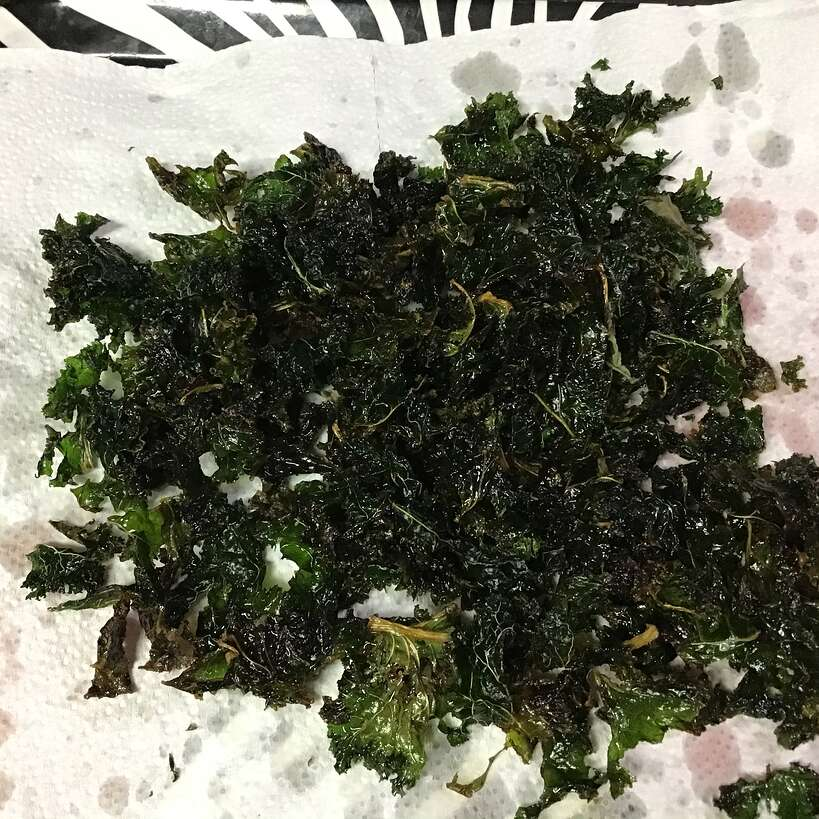

Kale Chips with Honey

Description
Get your daily dose of greens in with the sweet but crispy kale snack
Ingredients
- 2 bunches dino kale
- 1/4 cup olive oil
- 1 teaspoon sea salt
- 1/2 lemon, juiced
- 1 tablespoon honey
Steps
- Combine kale, olive oil, lemon juice, and sea salt in resealable bag
- Massage mixture for 3 minutes
- Drizzle honey over mixture and massage gently for about 3 minutes
- Cook at 115 degrees F in food dehydrator for 8 hours